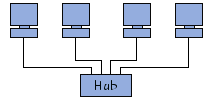

Topologie a stella
In una topologia a stella, i computer della rete sono collegati ad un sistema
hardware centrale detto concentratore (in inglese hub, letteralmente mezzo
di ruota). Si tratta di una scatola che comprende un certo numero di
collegamenti nei quali è possibile inserire i cavi di rete dei computer.
Quest'ultimo ha come ruolo di assicurare la comunicazione tra i diversi
collegamenti.
